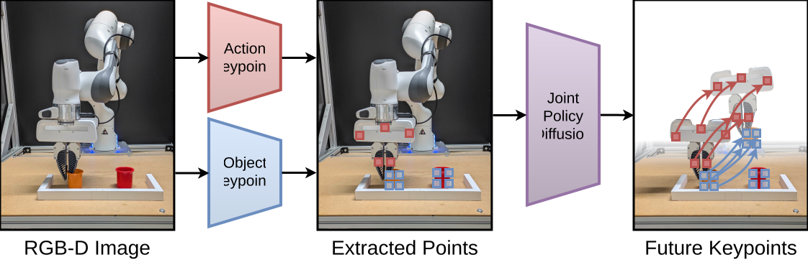

PAKT: Predicting Action and Keypoint Trajectories

Abstract
Diffusion policies have become the dominant paradigm for visuomotor imitation learning, yet they treat the scene as a fixed signal that conditions action denoising without being affected by said action. This asymmetry prevents policies from easily producing actions that are geometrically consistent with the scene they are acting on. We propose Predicting Action and Keypoint Trajectories (PAKT), a diffusion policy that represents object keypoints and policy action tokens in a shared 3D point modality and denoises them jointly, allowing action and object-motion prediction to become a single coupled process within the predicted action chunk. Unlike prior work that predicts future scene states or treats 3D representations as one-way conditioning, joint denoising lets actions and object trajectories bidirectionally condition each other. PAKT is paired with a foundation model-based preprocessing pipeline to extract temporally consistent, semantically meaningful keypoints from arbitrary scenes without task-specific engineering. We evaluate PAKT on all single-task benchmarks in the simulated ROBOCASA suite and four real-world manipulation tasks on a Franka Emika Panda. We find that it significantly outperforms state-of-the-art diffusion-policy baselines, including recent keypoint-based imitation methods. Similarly, we show superior performance to a variant of PAKT that consumes the same keypoints without denoising them.
Keypoint Extraction Pipeline
Object keypoints are extracted automatically from RGB-D demonstrations using a chain of pretrained foundation models. No task-specific training is required — only per-task natural-language object names and, in the real world, optional single-click corrections to the initial segmentation.

Real-world Results Table
Success rates (%) over 20 trials per task on a Franka Emika Panda. Best result per task in bold. The vertical rule separates per-task results from the average.
| Method | Drawer | Arrange | Stack | Fold | Average |
|---|---|---|---|---|---|
| PAKT (Ours) | 75.0 | 80.0 | 85.0 | 30.0 | 67.5 |
| PAT | 70.0 | 70.0 | 75.0 | 20.0 | 58.8 |
| KAT | 45.0 | 30.0 | 55.0 | 20.0 | 37.5 |
ROBOCASA Results
We evaluate on all single-task benchmarks from the ROBOCASA simulation suite. Select a task to compare PAKT, PAT, and KAT side by side.
PAKT (Ours)
PAT
KAT
ROBOCASA Results Table
Average success rates and standard deviations (%) across 3 seeds. Bold numbers highlight the best success rate per task. Cell shading indicates 1st, 2nd, and 3rd best method per task. The vertical rule separates baselines (left) from our methods (right).
| Task | Success Rate (↑) | |||||
|---|---|---|---|---|---|---|
| DP | ATM | PointPatch | KAT | PAT | PAKT | |
| Open/Close Doors | ||||||
| OpenSingleDoor | 7.7±3.1 | 10.3±1.7 | 23.0±1.4 | 12.3±3.1 | 35.0±2.2 | 41.7±1.7 |
| OpenDoubleDoor | 1.0±0.8 | 0.0±0.0 | 16.3±4.8 | 46.5±6.2 | 65.3±3.4 | 51.0±3.7 |
| CloseSingleDoor | 22.7±1.2 | 18.7±2.9 | 53.7±4.5 | 36.3±4.6 | 68.1±1.5 | 65.8±1.1 |
| CloseDoubleDoor | 15.0±0.8 | 2.3±0.9 | 41.3±4.6 | 54.7±10.0 | 86.8±2.9 | 79.7±3.4 |
| Open/Close Drawers | ||||||
| OpenDrawer | 2.7±0.5 | 38.0±2.2 | 15.0±3.6 | 37.0±2.4 | 62.0±2.2 | 79.4±2.4 |
| CloseDrawer | 26.0±3.3 | 72.3±2.9 | 54.7±3.3 | 89.0±2.2 | 46.3±4.5 | 86.0±2.4 |
| Insertion | ||||||
| CoffeeServeMug | 2.3±1.9 | 23.3±0.9 | 5.0±0.0 | 15.3±2.9 | 20.7±2.5 | 18.3±3.4 |
| CoffeeSetupMug | 0.0±0.0 | 3.0±2.2 | 0.3±0.5 | 11.0±0.8 | 11.3±4.0 | 16.3±2.1 |
| Pick-and-Place | ||||||
| PnPCabToCounter | 0.7±0.5 | 4.3±3.3 | 1.3±0.9 | 0.3±0.5 | 10.3±1.7 | 23.0±3.6 |
| PnPCounterToCab | 0.0±0.0 | 2.3±1.2 | 0.3±0.5 | 0.7±0.5 | 12.3±3.9 | 11.3±0.5 |
| PnPCounterToMicrowave | 0.0±0.0 | 0.0±0.0 | 0.3±0.5 | 0.3±0.5 | 0.0±0.0 | 1.0±0.8 |
| PnPCounterToSink | 0.0±0.0 | 0.0±0.0 | 0.3±0.5 | 1.0±0.8 | 7.0±2.8 | 9.7±2.6 |
| PnPCounterToStove | 0.0±0.0 | 1.0±0.8 | 0.0±0.0 | 0.0±0.0 | 13.3±3.4 | 17.7±0.9 |
| PnPMicrowaveToCounter | 0.0±0.0 | 2.7±2.1 | 0.7±0.5 | 1.0±0.8 | 5.0±2.8 | 5.7±0.9 |
| PnPSinkToCounter | 0.0±0.0 | 0.7±0.9 | 0.3±0.5 | 0.7±0.9 | 7.0±2.4 | 11.7±0.5 |
| PnPStoveToCounter | 0.0±0.0 | 0.7±0.5 | 0.0±0.0 | 0.0±0.0 | 9.0±3.6 | 16.7±1.7 |
| Turning Levers | ||||||
| TurnOnSinkFaucet | 27.3±4.7 | 43.7±3.1 | 30.7±4.5 | 27.7±2.5 | 49.7±6.8 | 62.7±2.9 |
| TurnOffSinkFaucet | 44.3±7.0 | 34.0±3.7 | 58.0±5.7 | 34.7±4.5 | 44.7±5.8 | 45.3±4.1 |
| TurnSinkSpout | 31.8±1.1 | 31.7±4.6 | 55.0±1.6 | 35.3±3.1 | 50.0±5.1 | 51.0±5.4 |
| Twisting Knobs | ||||||
| TurnOnStove | 3.0±1.4 | 18.7±3.7 | 33.5±5.5 | 24.0±2.2 | 24.7±2.6 | 23.7±0.5 |
| TurnOffStove | 2.7±0.5 | 2.7±2.1 | 14.0±2.9 | 6.6±0.5 | 8.3±2.5 | 7.7±0.9 |
| Pressing Buttons | ||||||
| TurnOnMicrowave | 8.0±2.4 | 25.0±17.9 | 38.7±0.5 | 26.3±2.6 | 47.7±2.9 | 39.3±2.1 |
| TurnOffMicrowave | 14.7±2.9 | 34.0±6.2 | 35.7±4.5 | 40.7±1.7 | 64.3±2.6 | 59.0±2.2 |
| CoffeePressButton | 14.7±4.5 | 21.3±13.7 | 31.7±1.2 | 24.3±2.5 | 67.0±2.4 | 57.3±0.9 |
| Average | 9.4 | 16.3 | 21.2 | 21.9 | 34.0 | 36.7 |